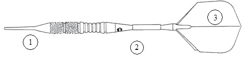

Minden darts tábla, ami steel darts versenyeken használható, a következőképpen nézzen ki:
A darts táblát úgy állítsuk be, hogy a 20-as számmal jelölt szektor legyen a sötétebb a két szín közül, és középen, a tábla tetején helyezkedjen el. A táblát úgy helyezzük el a falon, hogy a középpontja 1,73 méter magasan legyen.
Hossza nem lehet több, mint 30,5 cm, a súlya nem lehet több, mint 50 g. Minden dart-nak legyen tű alakú hegye (1), ami a testhez (2) rögződik. A test hátsó végénél legyen a tollszár (3), amihez a tollat rögzítik. A darts készlet három darabból áll.

A játékos hozza a saját dartját, amelynek hossza nem lehet több 20 cm-nél, a súlya nem lehet több 18 g-nál. Az eltérés mindkét esetben plusz 10% lehet.
Minden dartnak legyen műanyag, tű alakú hegye, ami a testhez rögződik.